西门南侧石塔西面，白石竖牌上自上而下题写「山东大学」。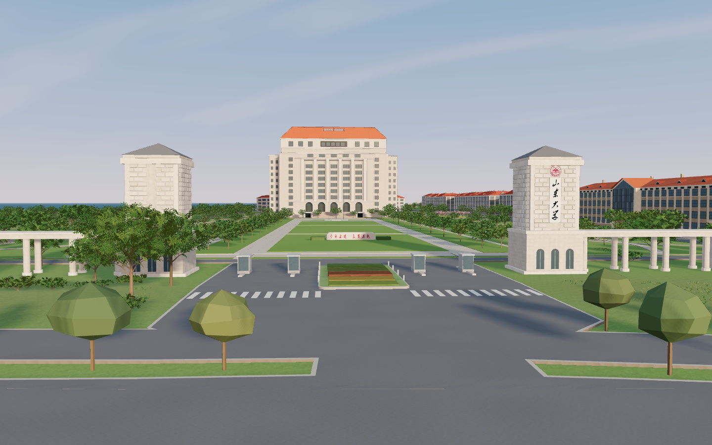入口全景在模型中查看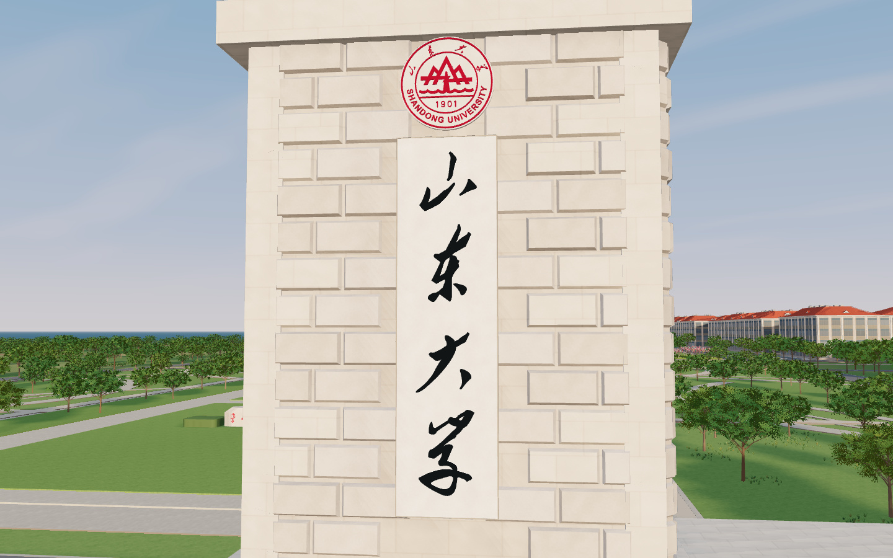校名近景在模型中查看校方刊载的西门实景查看 Blender 近景渲染展开实景照片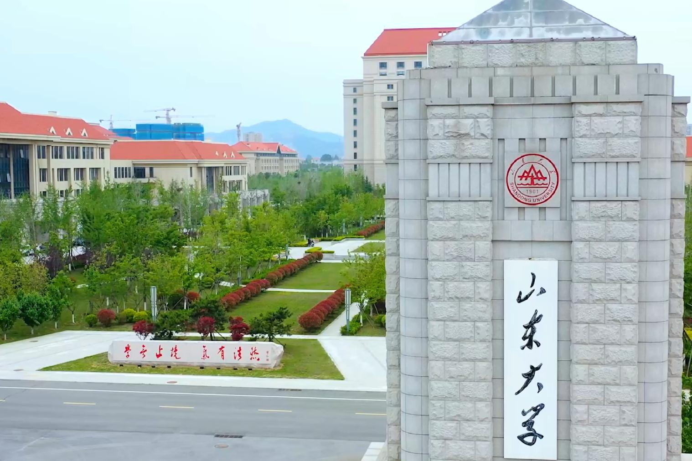2024 山东大学（青岛）转载中国日报网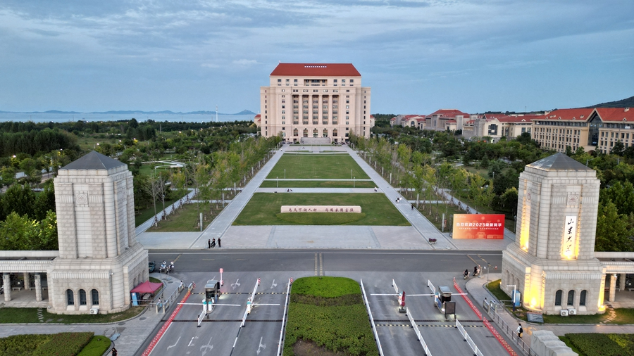 山东大学文化网
北门从校外看主塔的棕色竖格栅与底部三扇拱窗。上方浅色圆印在照片中可见，印内文字难以辨读。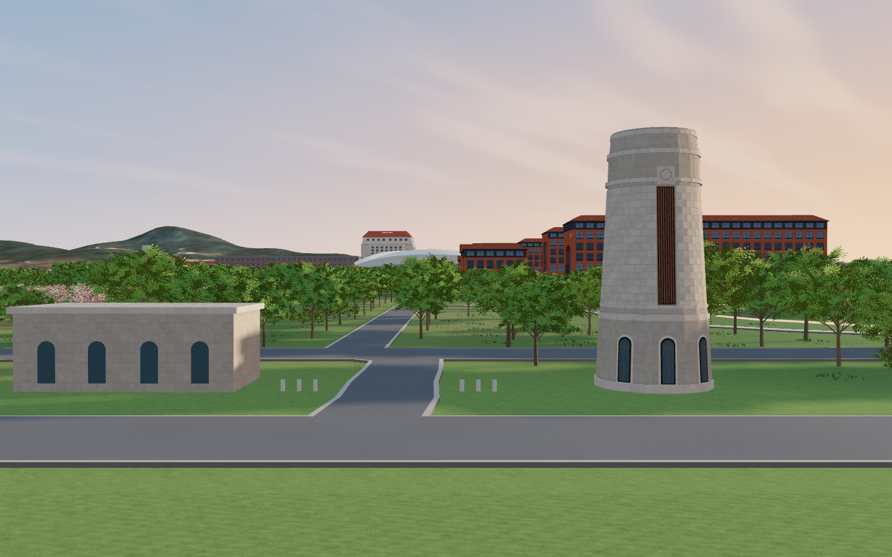入口全景在模型中查看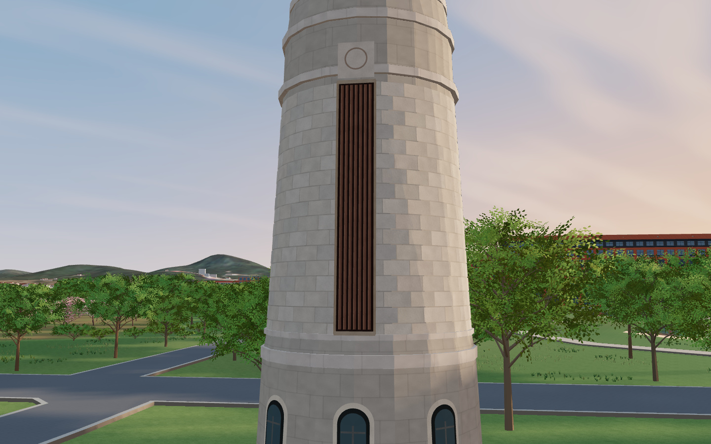门楼近景在模型中查看北校门接管验收实景展开实景照片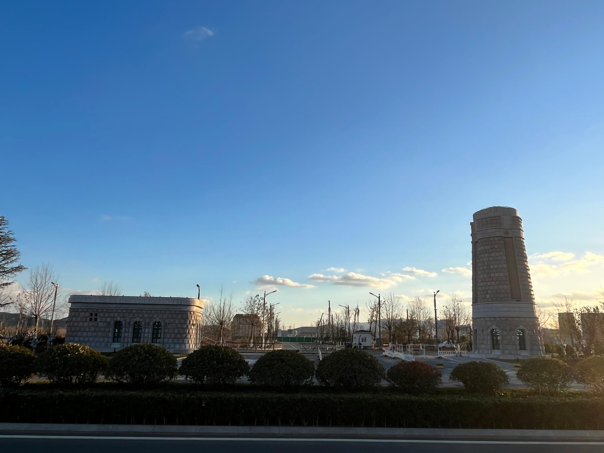2021 山东大学（青岛）基建处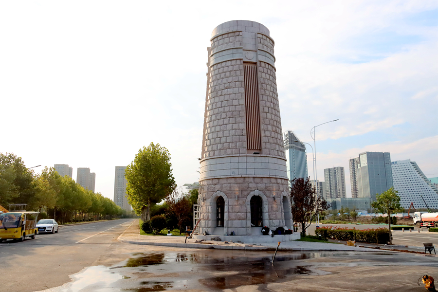2021 山东大学（青岛）基建处、组织宣传统战部
东门从图书馆朝海看，左侧北塔高起，右侧低亭衔接弧形柱廊，绿岛将两条车道分开。照片中门牌字样难以辨读。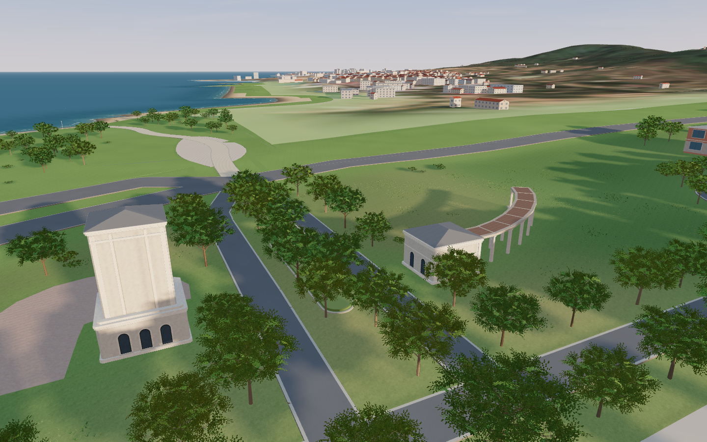入口全景在模型中查看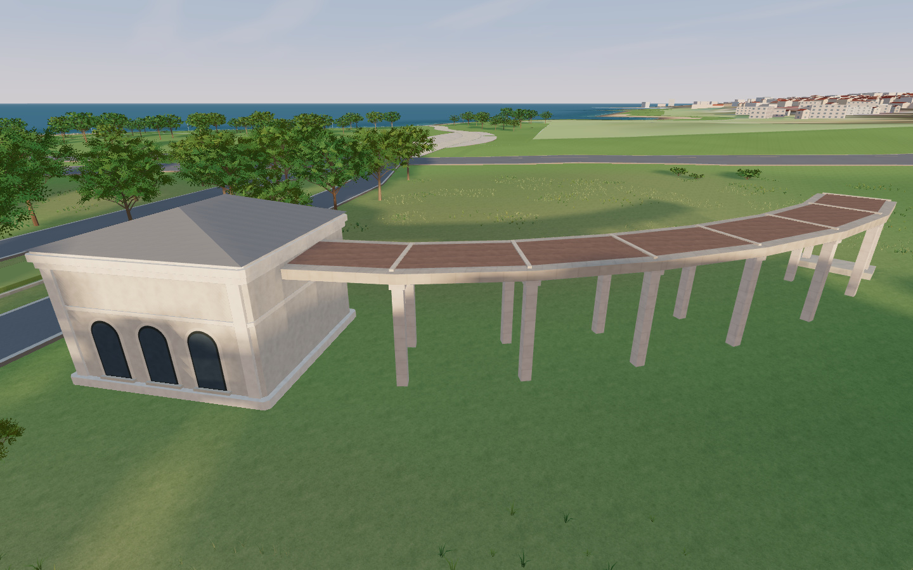门楼近景在模型中查看校区基建处对东门的介绍
南门红瓦单塔与低岗亭之间是入口车道。塔上的校徽与竖写校名分别见于2016年和2024年的照片。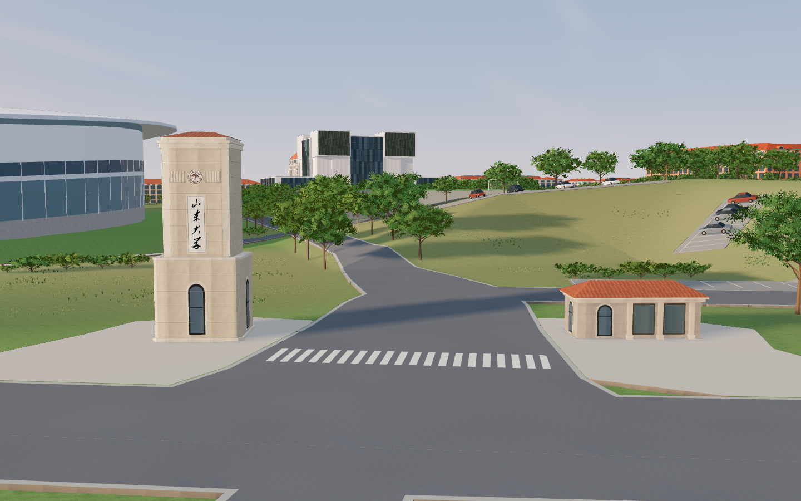入口全景在模型中查看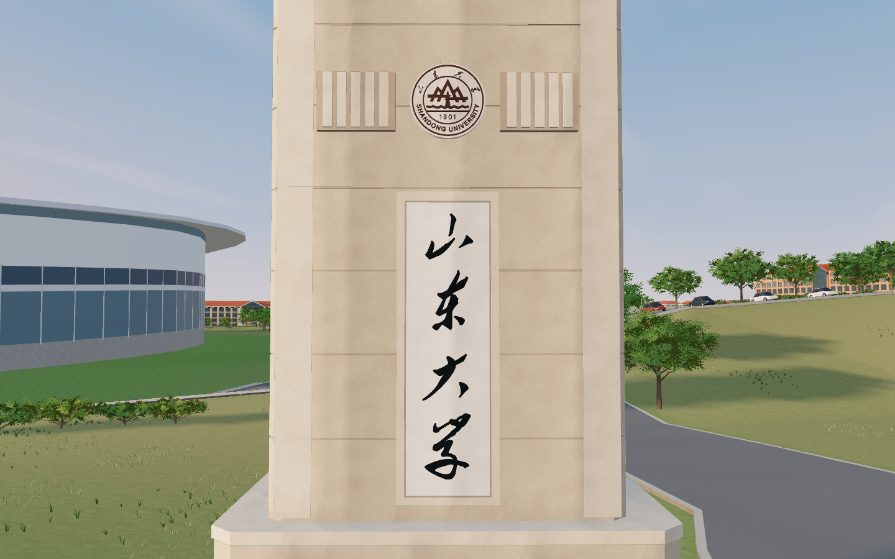校名近景在模型中查看校方刊载的南门实景查看 Blender 近景渲染展开实景照片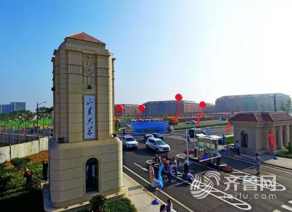2016 齐鲁网记者田进，凤凰网转载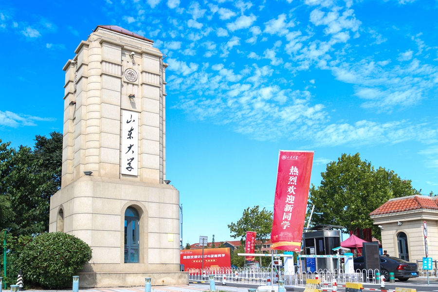2024 齐鲁晚报·齐鲁壹点，山东大学（青岛）转载
樱海湖从空中辨认岸线，到湖畔看风纹与夕阳反光。浅滩到湖心的水色按离岸距离设计，未使用实测水深。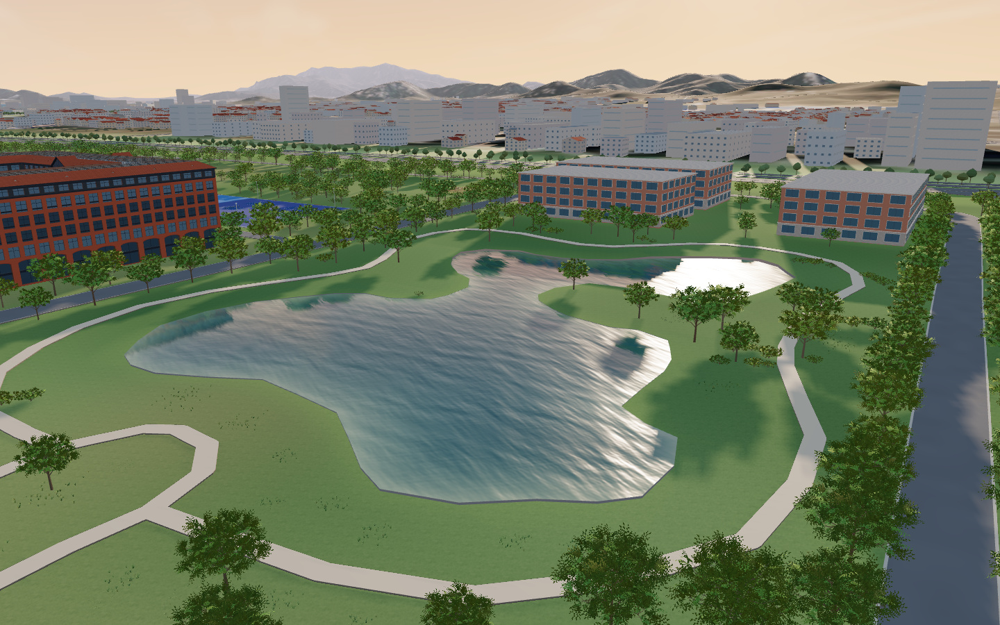湖面全景在模型中查看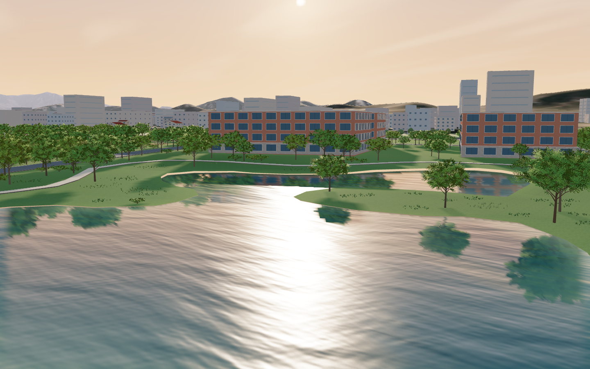湖畔近景在模型中查看校方介绍樱海湖补水查看 Blender 近景渲染